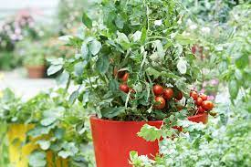
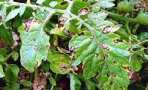

Tomato (Solanum lycopersicum) is a highly cultivated fruit, prized for its versatility and nutritional value. Originating from South America, tomatoes have become a cornerstone of global cuisine, featuring prominently in salads, sauces, and various culinary delights.
The succulent and flavorful nature of tomatoes is owed to their rich content of vitamins, particularly vitamin C, and beneficial antioxidants. From the garden to the kitchen, tomatoes add vibrant colors and vibrant tastes to our daily meals.
Tomato cultivation involves meticulous practices to ensure a robust harvest. Whether you're an amateur gardener or a seasoned farmer, understanding key cultivation principles is vital. Tomatoes prefer well-drained, fertile soil with a slightly acidic to neutral pH.
Planting can be done from seeds indoors or through purchased seedlings. A sunny location, consistent watering, and proper spacing are essential. Staking or caging supports the plant as it grows, preventing sprawling and enhancing air circulation.
Exploring the diverse world of tomato varieties unveils a spectrum of flavors, sizes, and colors. Beefsteak tomatoes, known for their large and meaty nature, are perfect for slicing. Cherry tomatoes, small and sweet, are delightful for snacking and salads.
Roma tomatoes, with their firm flesh, are excellent for sauces and pastes. The array of choices empowers growers and chefs to tailor their selections to the specific needs of their culinary creations.
The foundation of successful tomato cultivation lies in the soil. Tomatoes thrive in well-drained, loamy soil enriched with organic matter. Compost or well-rotted manure can be incorporated to enhance soil fertility, ensuring a nutrient-rich environment for plant development.
Monitoring soil pH levels and providing consistent fertilization throughout the growing season contribute to healthy plant growth. A well-prepared soil bed lays the groundwork for robust tomato plants and a fruitful harvest.
Protecting tomato plants from pests and diseases is crucial for a thriving harvest. Aphids, whiteflies, early blight, and blossom-end rot are common challenges. Implementing integrated pest management (IPM) practices and choosing disease-resistant varieties are effective strategies.
Regular inspection, early identification of issues, and prompt intervention contribute to a thriving tomato garden, ensuring a bountiful harvest of flavorful and nutritious tomatoes.
The timing of tomato harvesting is crucial to ensure optimal flavor and quality. Tomatoes are typically ready for harvest when they reach full color and firmness. Avoid picking them when they are still green and hard.
Use garden shears or a sharp knife to cut the tomatoes from the vine, leaving a small portion of the stem attached. This helps in preserving the quality during storage. Handle the tomatoes with care to prevent bruising, as bruised tomatoes are more prone to spoilage.
Harvested tomatoes can be stored at room temperature for short-term use, but for longer storage, keep them in a cool, dry place. Refrigeration can affect the texture and flavor, so it's generally recommended to store them at room temperature.